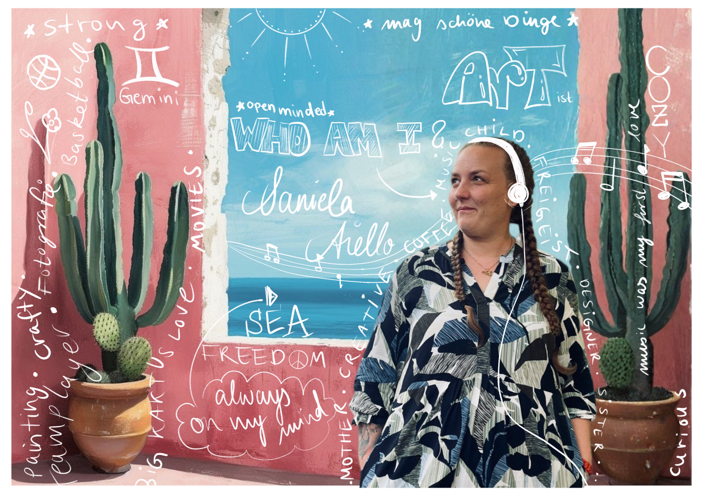

WHO AM I? Das Bild fasst es eigentlich perfekt zusammen: Ich bin Daniela – kreativer Freigeist, Mama, Gestalterin und absolute Kaffeeliebhaberin. Musik war meine erste große Liebe, dicht gefolgt von der Fotografie und der Kunst. Als echter Zwilling brauche ich die Abwechslung und bin immer offen für Neues. Ob als Teamplayerin beim Sport oder fokussiert an meinen Design-Projekten: Ich bin neugierig, liebe das Meer, die Freiheit und habe immer ein Auge für die schönen Dinge im Leben.

Wie du siehst, ist mein Weg nicht einfach nur streng geradeaus verlaufen – und genau das macht mich aus! Meine verschiedenen beruflichen Stationen haben mir gezeigt, wie wichtig Flexibilität, Selbstorganisation und Teamwork sind. All diese Lebenserfahrung und meine Liebe zur Kreativität bündle ich heute in meiner Arbeit als Mediengestalterin.